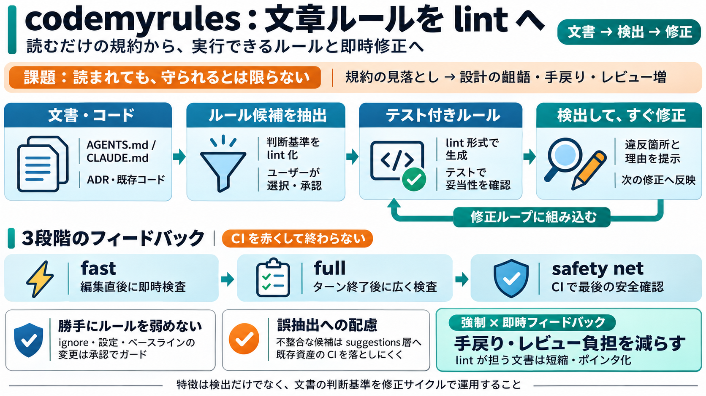

Risks and mitigations for GitHub Copilot cloud agent - GitHub Docs
By default, Copilot cloud agent checks code it generates for security issues and gets a second opinion on its code with …

codemyrules は、AGENTS.md/CLAUDE.md/ADR などの“文章ルール”を、無視されにくい“lint ルール”へ変換し、違反をその場でフィードバックします。（文書→検出→修正のループ）
AGENTS.md や ADR の記述は参照されても、エージェントが毎回必ず守る保証がありません。
その結果、意図が実装へ反映されず、後から設計判断の齟齬に気づくことがあります。
codemyrules は“文書上の判断基準”を、実行時に判定できる“lint 規則”へ架橋します。
違反が起きた瞬間に指摘が返り、次の修正で学習・反映が進みます。
codemyrules は、既存コードの多数パターン・ADR・文書から“規約らしき判断”を掘り起こし、lint へ落とせるルール候補を見つけます。
各候補は「自動で取り込むか／手動で選ぶか」をユーザーが選べます。
文書上では“読むだけ”になりがちな部分を、lint に移す際は、基本的にユーザーの yes が前提です。
自動モードでも推奨ルール・ループ・ベースラインは yes を含む一方、ドキュメント編集やフック設定などは確認対象になります。
生成ルールにはテストが付与され、ルールが“作っただけ”で終わらないようにします。
これにより回帰（意図せぬ挙動）を抑える狙いがあります。
fast tier は編集直後、full tier はターン終了後、safety net は CI で実行されます。
CI を赤にするだけで終わらず、エージェントが書いた直後に「違反」を返します。
ポイントは“検出”ではなく“次の修正で直せる状態”を作ることです。
違反箇所とルールが分かるため、エージェントはループ内で修正を回しやすくなります。
ignore コメントの追加や lint 設定の変更、ベースライン変更など“ルールを弱める操作”はガードされます。
ユーザーの承認なしに黙って進まない設計が書かれています。
lint がカバーする文書行は、削除・短縮・ポインタ化されます。
長文を毎セッション読む負担を減らし、エージェントが本当に必要な指示に集中しやすくなると整理されています。
codemyrules は既存の静的解析ツールに近い部分はある一方、目的が違います。
文書や ADR の判断基準を lint へ変換し、エージェントの修正サイクルへ組み込む点が特徴です。
ルール候補はコード多数パターンや ADR 文面に依存するため、不一致があるリポジトリでは誤った“規約っぽいもの”をルール化する可能性があります。
ただし suggestions 層に回し、CI を落としにくい方針が述べられています。
説明では、JavaScript/TypeScript/Vue/Svelte（ESLint や oxlint）、Java/Kotlin/Python/Go/C#/PHP/Rust/Ruby（ast-grep や既存リンタ等）、PowerShell（PSScriptAnalyzer）などが挙げられます。
また Biome は未対応と明記されています。
codemyrules は「プロンプト文書の統制」から「lint による強制と即時学習」へ寄せる実務的アプローチです。
文書ソースの品質と、誤検知時の運用（誰が ignore/修正判断するか）を最初に固めるのが重要、という考えがまとめられています。
By default, Copilot cloud agent checks code it generates for security issues and gets a second opinion on its code with …
Our evaluation focuses on two key dimensions: (1) the accuracy of Copilot’s code review in detecting security vulnerabil…
- Security risks (cloud agent): The cloud agent generates code and natural language based on the context of an issue or …
Credits come from a single pool, and almost every Copilot feature draws from it: Copilot Chat, the Copilot CLI, the clou…
Each time Copilot reviews a pull request or reviews code in your IDE, the interaction consumes AI credits. The amount de…